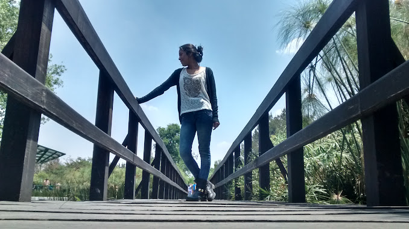

Querida Mireya,
Hoy es un día especial, porque celebramos no solo tu cumpleaños, sino también la maravillosa persona que
eres. En este día, quiero recordarte lo increíble que eres y lo afortunado que me siento de tenerte en mi
vida.
Tu presencia ilumina cada momento, y tu corazón amoroso y generoso inspira a todos a tu alrededor. En este
año que comienza para ti, te deseo todo lo mejor que la vida pueda ofrecer: felicidad en abundancia, éxitos
en tus proyectos y amor que te llene de alegría cada día.
Que este cumpleaños sea solo el comienzo de un año lleno de momentos especiales, risas compartidas y sueños
cumplidos. Estoy agradecido por cada recuerdo que hemos creado juntos y emocionado por los que vendrán.
Feliz cumpleaños, Mireya. Que este día esté lleno de amor, risas y todas las cosas que te hacen feliz.
Con todo mi cariño,
- Tadeo
Creí que nuestros mundos se alinearían.
Durante años, evité las relaciones fugaces,
pero, consciente de las consecuencias,
me aventuré sin medir los daños que podría provocar en mi ser.
Tú no tienes la culpa.
Toda la responsabilidad es mía.
Soy solo un soñador buscando su otra mitad,
y sin pensarlo, me lancé a intentarlo en cuanto te vi.
Perdón si el tiempo perdido te pasa factura.
Quería vivir en la calidez y la dulzura de tu amor,
compartir contigo mi locura,
y ahora solo quedan estos intentos vagos de escritura.
Grito, tratando de ocultar vidas anteriores nada amables, resguardando energías y esperanzas sinceras.
Bueno, te conocí en secundaria, cuando éramos apenas capullos esperando a florecer, jóvenes inmaduros y,
como hormigas, pertenecientes a un grupo.
Es atrevido para mí recordar aquellos días. Recuerdo cuando apenas formé parte del grupo; irónicamente,
nunca pertenecimos al mismo. Coincidimos en algún lugar, eso es seguro, aquella tarde en la que tuvimos ese
convivio para celebrar a una amiga en común.
Aquella vez en la que me invitaste a ir a la feria de carreras del IPN... Lamentablemente no tengo fotos de
aquella ocasión, al menos no las que quisiera.

Pero recuerdo ese día con alegría. Fue lindo acompañarte y saber que tenía una amiga.
Sabes de sobra que siempre he sido alguien solitario. Normalmente me alejo de la gente o hago que se alejen
de mí.
Y en aquel momento, por un solo momento, pensé que sería buena idea salir y convivir con amigos.
Tiempo más adelante, me invitaste al parque Bicentenario, y aunque no fue diferente, estuvimos juntos,
comimos, te miré. Aun así, te veías genial.
Es imposible para mí no recordar que me gustaste, pero sabiendo mi historial, no quise intentar nada, aun
considerando que eres amiga de las personas con las que en algún momento intenté tener algo...
El destino es gracioso, irónico y hábil. Más me interesa saber que nada fue en vano. Cuando te tuve conmigo,
a mi lado, en mi vida, te aproveché, te admiré, y aún lo hago. Estoy seguro de que no dejaré de hacerlo.
Eres una persona increíble. Me mantendré aquí, en este breve blog hecho únicamente para ti, para poder sacar
eso que tengo en mi corazón.
Nada malo, todo lo bueno que te podré dar. Eres un corazón, un ángel. Fuiste mi ángel, y te amé como nunca
lo esperaba.
Hace relativamente poco fue tu cumpleaños. Lo único que pude hacer ese día fue poner este sitio en línea. Intenté que fuera bonito y que te gustara de verdad, pero no paraba de pasar por mi cabeza cuál sería mi regalo. Entendiendo que, a pesar de que el sitio no es algo que alguien comúnmente te pueda regalar, es una forma de demostrarte lo mucho que me importas. Si bien, pareciera que al no tener "costo", aparenta depreciar su valor de manera inconsciente; entiendo que para ti fue bonito. Por lo que me contaron cuando lo viste, entendí que mínimamente te gustó. La realidad es que no hablamos mucho de ello después.
Aun cuando ya te había dado este regalo, no lo sentí suficiente. De verdad estuve días previos pensando qué hacer, si incluso era necesario acercarme, no porque no me importaras, sino porque lo que menos quería era fragmentar aún más este vacío que, con el tiempo, seguiría creciendo si no se lograba sanar. Por ello mi regalo días después fueron esas mariposas, reflejando tu libertad, pero también por el deseo de equilibrio. Las mariposas monarca todos los años hacen el mismo viaje, y ese es el significado que le quería dar: que no importa el camino a donde fuéramos, mi corazón esperaría la llegada del tuyo, y yo esperaba que fuese igual en tu caso.
Hoy dudo mucho que se pueda sanar. Mantienes tu distancia, intento mantener la mía, aunque días como hoy, 14/07/2024, no he podido soportar. Aún cuando mi mente me decía e invitaba a relajarme y no hacer mayor alboroto, me negué. Te marqué, te mandé mensajes, te busqué en tu casa. Quisiera decir que no me importa tu distancia, que si te alejas no pasa nada, pero esto no es así. Duele y cuesta racionalizar y entender que estás partiendo de mí, que todos estos pensamientos y sentimientos no serán lo que ansiaban ser.
Entiendo que esto podía tener fecha de caducidad, pero opté por soñar. Era lindo hacerlo, olvidar que este mundo de mierda es un mundo de mierda y simplemente compartir mi tiempo y mi lugar contigo. Es fecha que nadie cercano a mí, de parte de mi familia, sabe de esta ruptura, no porque este haya sido un fracaso, sino porque entendía que eres parte de mí, ahora y siempre. Pero, ¿cuánto tiempo me queda? ¿Cuánto tiempo queda para que decidas partir de Netwey? ¿Cuánto tiempo queda para que decidas olvidarte de todo?
El karma es lo suficientemente irónico como para aturdirme con este balde de agua fría. Sabías mi historia y creí que entendías todo lo emocional por lo que pasaba mi mente. Comprendí cómo pasaba en tu mente y sabía que todo este camino sucedería. Creí ser más fuerte, creí que no todo es gris, quise ver colores, sentir emociones y ser libre junto a ti.
Más comprendo que esto no tiene buena vista a futuro. Te sigues alejando y yo no puedo hacer nada para evitarlo. Me duele, porque me hace falta ese calor que emanas de tu cuerpo, ese sentimiento de embriaguez cuando tu aroma invade mi alma, esa luz en el brillo de tu mirada, una luz que cada día se opaca más. Y aunque intente mantener viva esta llama, dentro de mi corazón ya no está quedando qué incinerar.
Me gustaría hacer referencia también a nuestros trabajos. Afortunadamente entendemos que liberar todo esto que pasa por nuestras mentes no es tan fácil. Usamos el trabajo, la escuela o recursos exteriores para mantener ocupada nuestra mente, no pensar en la falta que hacemos. Lo comprendo y lo respeto, pero a mí no me importa no ser un genio en mi trabajo. Me gustaría citar la frase de Dr. House:
"Si sé que soy feliz, significa que lo estoy haciendo mal. No quiero ser feliz. No quiero ser miserable. No me importa cómo me siento. Me importa mi trabajo. Si soy feliz, no soy un buen doctor."
"Te necesito. Necesito que me digas que algo cambia. Necesito que me digas que soy una mejor persona. Necesito que me digas que puedo ser feliz. Porque no lo creo."
Si soy feliz, no me desempeño al 100% en mi trabajo, porque haré todo espacio posible para poder pasarlo junto a ti. Y, a la par, no me importa no ser un buen trabajador, me importa ser una mejor persona, creerlo, porque aún no lo creo, y el que esto no pueda salir de una forma normal lo demuestra, y toda esta situación que ha rodeado los últimos días lo demuestra.
Me importas, me importa saber que estás bien, te amo y es algo que no va a cambiar. Porque esto que sentí, no importando el tiempo que duró, fue algo muy hermoso, fue algo diferente, algo en lo que sentí paz, seguridad y tranquilidad. Lamento que no haya sido recíproco, que se malinterpretaran cosas que hice con otros fines que no son los que se dieron a entender. Lamento no poder ser mejor persona, lamento ser yo.
Aún duele, Mire.
Quisiera poder decir que quizás está bien que no haya sido, pero más y más lo pienso y quisiera haber podido tener una mínima oportunidad de salvar aquello que era nuestro.
Te extraño. Puedo estar bien, alejado de ti, eso es seguro, pero no es lo mismo. Tu ausencia deja un hueco enorme.
No espero respuesta a este mensaje, pero no quisiera dejar pasar que simplemente nada es igual.
Te quiero, mía pero a la vez tuya, como aquel mural que estaba en Colmena.
Te quiero libre y me cuesta soltarte. Eres grandiosa, dulce, amorosa, graciosa y real, algo que escasea en esta vida.
Jamás pasará por mi mente que tú eres del tipo de persona que es más normal que común.
Te amo, a la distancia, hoy, mañana y toda esta vida.